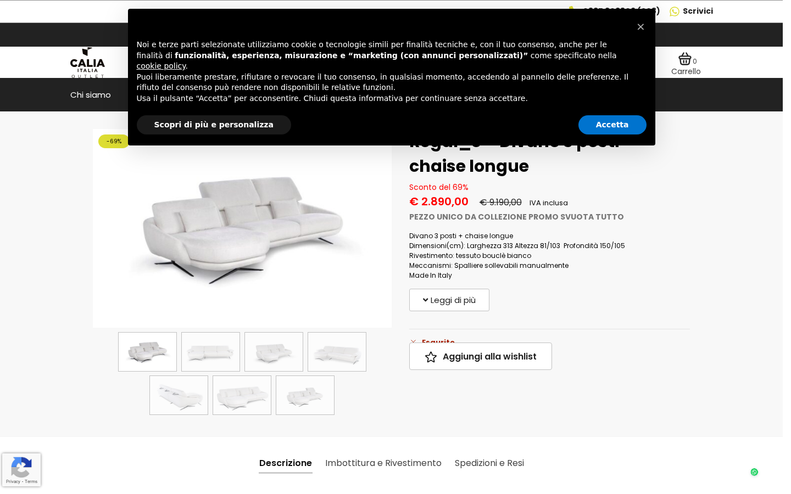
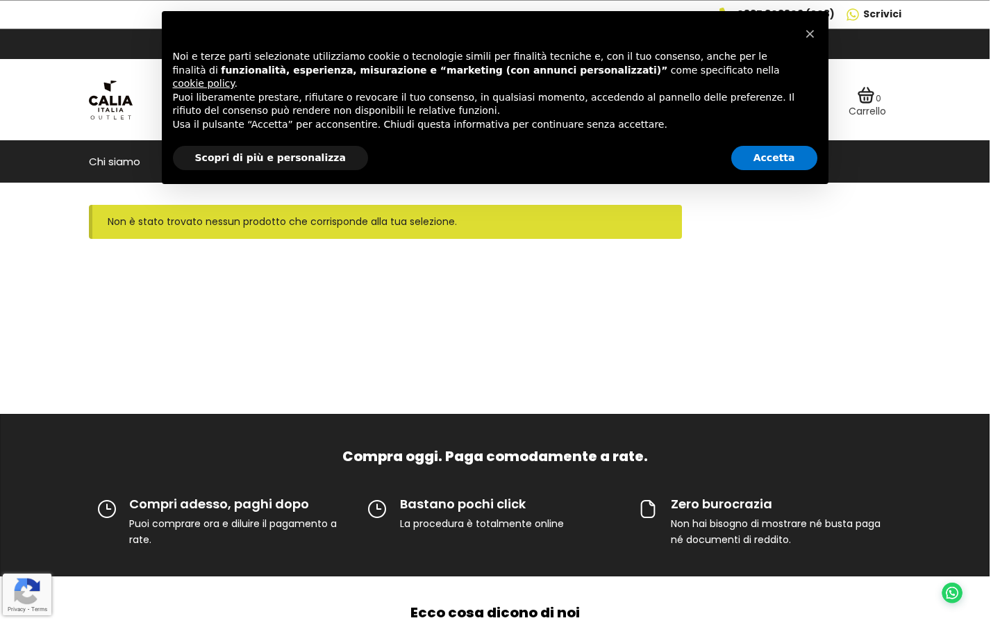
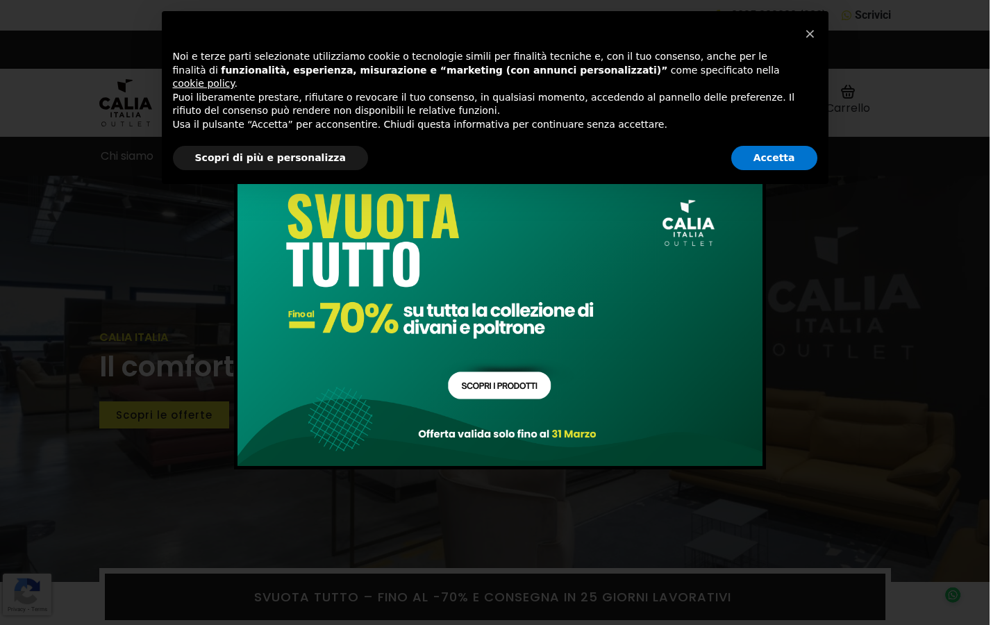

Il divano «Regal_e — 3 posti + chaise longue» risulta correttamente marcato come esaurito sul sito. Non è più acquistabile e non compare nelle pagine dello shop. Tuttavia, la pagina prodotto resta raggiungibile tramite link diretto. L’anomalia originale (prodotto venduto il 3 marzo ma ancora disponibile) è stata risolta manualmente da Michela. La causa dell’anomalia (mancato aggiornamento automatico dello stock dopo l’ordine) andrebbe investigata per evitare che si ripeta.
Il divano «Regal_e — 3 posti + chaise longue» mostra correttamente la scritta «Esaurito» sulla sua pagina. Il pulsante per aggiungerlo al carrello non è presente. Nessun cliente può acquistarlo per errore.

Pagina del prodotto Regal_e — stato «Esaurito» visibile, nessun pulsante di acquisto
Visitando il negozio online, il divano Regal_e 3 posti + chaise longue non appare tra i prodotti in vendita. L’impostazione del sito è configurata per nascondere automaticamente i prodotti esauriti dal catalogo.

La ricerca «regal_e» nello shop non restituisce il prodotto venduto
Quando un prodotto viene venduto, il sistema dovrebbe aggiornare automaticamente la quantità disponibile e segnarlo come esaurito. In questo caso, il divano è stato venduto il 3 marzo ma risultava ancora disponibile l’11 marzo. Michela lo ha corretto a mano, ma sarebbe opportuno verificare che il sistema aggiorni correttamente lo stock in automatico per evitare situazioni simili in futuro.
Abbiamo verificato il funzionamento generale del sito: la pagina principale, il catalogo prodotti, la pagina contatti e le altre sezioni rispondono correttamente. Nessun errore tecnico rilevato.

La pagina principale del sito funziona correttamente
| Campo | Valore |
|---|---|
| Sito | caliaitaliaoutlet.com |
| Server | 165.232.97.86 (Cloudways intel-8GB) |
| WP Path | /home/1016313.cloudwaysapps.com/ufmdxxnrzy/public_html |
| Scenario | Verifica anomalia (verification) |
| Prodotto | ID 16340 — Regal_e — Divano 3 posti + chaise longue |
| Verdict | ISSUES — anomalia risolta manualmente, causa root non identificata |
Il prodotto ID 16340 è stato venduto il 3 marzo tramite ordine e-commerce, ma lo stock non è stato aggiornato automaticamente. Possibili cause:
Raccomandazione: verificare le impostazioni di gestione stock del prodotto e lo stato dell’ordine del 3 marzo.